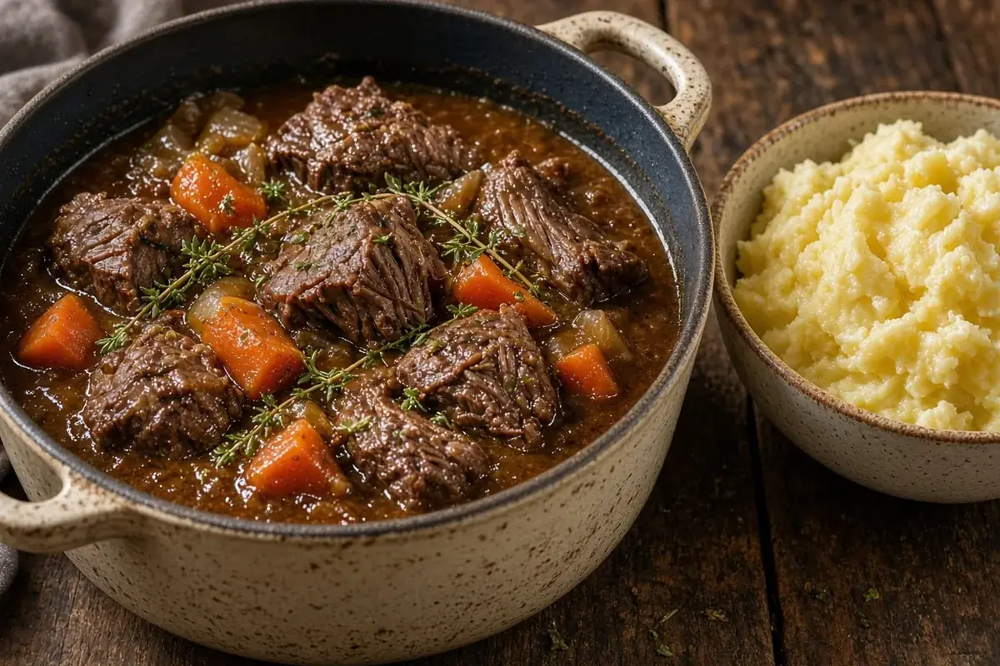

Braised Chuck Roast with Red Wine Gravy
A whole boneless chuck roast seared hard in the HexClad, then braised low in a large heavy pot with onions, carrots, garlic, tomato paste, red wine, bone broth, and thyme until fork-tender. The braising liquid reduces into a rich gravy for buttery mashed potatoes.

6 servings
By
Yield: 6 servings
Prep:
Cook:
Total:
Difficulty: Moderate
Ingredients
- 3 1/2 lb boneless chuck roast
- 2 1/2 tsp kosher salt, divided
- 1 tsp black pepper
- 2 Tbsp beef tallow
- 2 large onions, cut into wedges
- 1 lb carrots, cut into 2-inch pieces
- 8 garlic cloves, smashed
- 3 Tbsp tomato paste
- 1 1/2 cups dry red wine, or more beef bone broth
- 2 cups beef bone broth
- 1 Tbsp Worcestershire sauce
- 6 sprigs fresh thyme
- 2 bay leaves
- 3 lb Yukon Gold potatoes, peeled and quartered
- 6 Tbsp butter, divided
- 1/2 cup whole milk, warmed
- 2 Tbsp all-purpose flour
- 2 Tbsp fresh parsley, chopped
Instructions
- Pat the chuck roast dry and season all over with 2 tsp of the salt and the pepper, then let it sit at room temperature, 30 minutes. Heat the oven to 300°F during this time.
- Heat the tallow in a 12-inch HexClad skillet over medium-high heat, 2 minutes. Sear the chuck roast until deeply browned, 4 minutes per side plus 2 minutes on the edges, 10 minutes total. Move it to a large heavy pot.
- In the same skillet, cook the onions and carrots until browned at the edges, 6 minutes. Add the garlic and tomato paste and stir until the paste darkens, 2 minutes.
- Pour in the red wine and scrape up the browned bits, then simmer until reduced by half, 4 minutes. Pour everything over the roast in the large heavy pot.
- Add the beef bone broth, Worcestershire sauce, thyme, and bay leaves to the large heavy pot; the liquid should come about halfway up the roast. Bring to a simmer on the stovetop, 5 minutes.
- Cover and braise in the oven until the chuck roast is fork-tender, 3 hours 15 minutes, turning it once halfway through.
- About 35 minutes before the roast is done, cover the potatoes with cold water in a pot, add the remaining 1/2 tsp salt, bring to a boil, 10 minutes, and simmer until tender, 15 minutes. Drain, then mash with 4 Tbsp of the butter and the warmed milk, 5 minutes.
- Move the roast and vegetables to a platter and tent with foil to rest, 10 minutes. Discard the thyme stems and bay leaves and skim the fat off the braising liquid, 2 minutes.
- Make the gravy: melt the remaining 2 Tbsp butter in the HexClad skillet over medium heat, whisk in the flour, and cook 2 minutes. Whisk in 3 cups of the braising liquid and simmer until reduced and glossy, 8 minutes.
- Slice or pull the roast into thick pieces, spoon the gravy over the roast, vegetables, and mashed potatoes, and sprinkle with the parsley, 3 minutes.
Notes: Ask for a well-marbled chuck roast; the fat renders into the gravy. Use all beef bone broth instead of the wine if you prefer. Leftovers keep 4 days and freeze well in their gravy for up to 3 months; reheat covered at 325°F, 25 minutes.